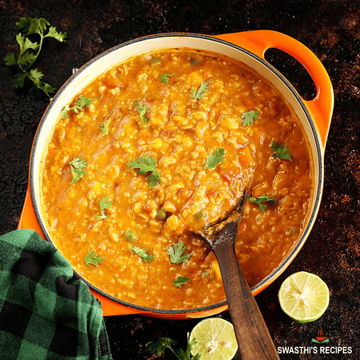

Masala Oats Recipe
A healthy, tasty, and spicy oats recipe that is an ideal breakfast recipe for kids and even adults.
Having oats with milk or yogurt can be monotonous particularly if it is served daily.
Preparation Time
- adding ingredients:10 minutes
- cooking time:10 minutes
- Total time:20 minutes
Ingredients
- Veggies:Tomato,Capsicum
- Rolled textured Oats
- Spices:Salt,Chillies,Chat masala
Instruction
- Pour 2 tablespoons of ghee or oil on a medium flame.
- After 5 minutes add green chili,onions and fry until turn golden.
- Now add capsicum , tomatoes with constant stirring until its color changes.
- Add salt,kashmiri red chili powder and Chaat masala with constant stirring.
- Now add those rolled oats and a little bit salt.
- Keep the flame medium.
- Do not forget to ENJOY and Being grateful to God.
Nutrition
- Oats are a good source of many vitamins, minerals.
- Calories: 307
- Water: 8.7 grams
- Protein: 10.7 grams
- Carbs: 54.8 grams
- Sugar: 0.8 grams
- Fiber: 8.1 grams
- Fat: 5.3 grams